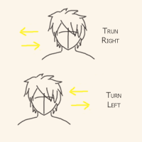

HEAD AND NECK EXERCISE

People with spinal or neck problems are not advised to do this exercise.
STEP 1
Without straining, and just to feel that point of tension, pivot the head toward the RIGHT shoulder. Do this slowly.
Return to your base-line position. Repeat three times.
Slowly pivot the head toward the LEFT shoulder...just to feel the point of tension, going no further. Return to your base-line position.
Repeat three times.